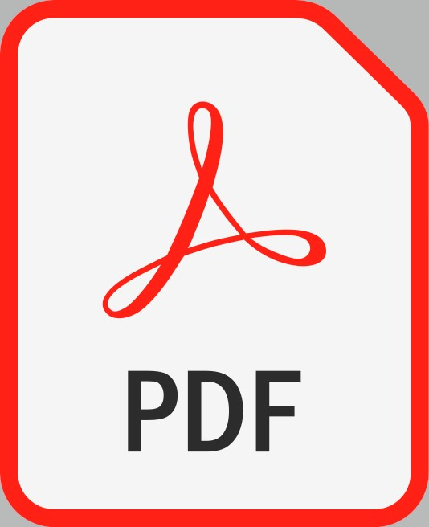

CV 
Profile on Google Scholar
Profile on The Conversation
Profile on CEPR/VOX EU
Profile on CESifo
ResearchGate
Bio
Benjamin Shiller is an associate professor in the Department of Economics at Brandeis University. His research primarily focuses on the economic impacts of digitization and new technologies. Within this domain, he has analyzed questions relating to personalized pricing, resale, and supplier coordination. His research has been covered in the press by notable publications such as: The Atlantic, The Conversation, The Economist, Forbes Magazine, The Guardian, VOX EU, and The Washington Post.
For media inquiries about personalized pricing, car safety, self-driving vehicles, ad-blocking or other technology-related topics, email: ShillerMediaInquiries 'at' gmail.com.